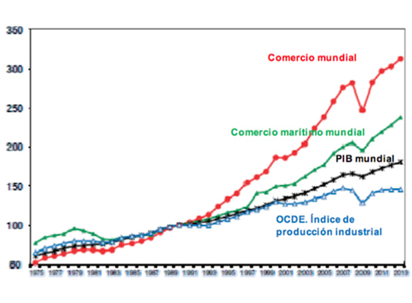
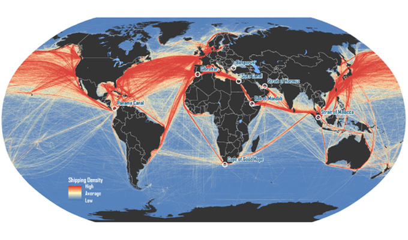

Desafíos para el Sistema Portuario Argentino
El Sistema Portuario nacional se encuentra en un escenario de múltiples desafíos, que dependen en gran medida de las decisiones que se tomen desde el poder ejecutivo y el legislativo, nacional y provincial.
Primer desafío: reforzar el papel del Estado
En el sistema portuario argentino hubo un hito en la década del ’90, con la sanción de la Ley de Puertos: se generó un cambio radical, pasando de un sistema de gobernanza centralizado por el Estado nacional a un sistema de gobernanza público o privado, pero con regulación estatal a través de la autoridad de aplicación nacional.
Entre sus definiciones principales, la ley: (1) dicta la Ley Nacional del Sistema Portuario; (2) define el concepto de puerto; (3) establece la habilitación de puertos existentes o a crearse; y (4) clasifica los puertos según titularidad del inmueble (nacionales, provinciales, municipales o particulares), por su uso (público o privado) y por su destino (comerciales, industriales o recreativos).
Podemos estar de acuerdo o no con estas definiciones, pero coincidimos en que en 1992 se definió un nuevo modelo de gestión que incorporó al ámbito privado al sector operativo portuario. Esa ola también alcanzó a la gestión del tramo más importante de la Hidrovía Paraná-Paraguay, y permitió la creación de puertos privados sobre el río Paraná, profundizar la vía navegable fluvial y crear puertos públicos autónomos como Bahía Blanca y Quequén.
El sector privado cumplió, generando un importante crecimiento del negocio y operando con eficiencia. Pero el sector público se fue retirando de la gestión portuaria. El primer desafío es entonces recuperar que “el Estado debe cumplir adecuadamente el papel que le toca en el Sistema Portuario Argentino: controlar, regular y planificar (estos tres, como mínimo)”.
Segundo desafío: estrategia y planificación
El gran desafío es aceptar que no existe planificación a nivel nacional en el sistema portuario —y me animaría a asegurar que en muchos puertos tampoco—, para luego poder desarrollar la tarea de establecer una estrategia operativa y una planificación de largo plazo para el sistema portuario argentino y para cada autoridad portuaria.
Solo con toda esa información y tras un proceso de reflexión, una organización puede identificar dónde sería deseable posicionarse en el mediano plazo (visión); cuál será el camino más recomendable (líneas estratégicas); su auténtica razón de ser (misión); y qué retos concretos alcanzar en el camino (objetivos estratégicos). Debe responder preguntas fundamentales: ¿qué puerto somos? y ¿qué puerto queremos ser?
Tercer desafío: control y Cuadro de Mando Integral
Un buen proceso de diseño o planeamiento estratégico no asegura por sí solo el éxito. Es preciso además llevar a cabo una correcta ejecución, seguimiento y control de los planes definidos. Habrá que establecer indicadores de resultados que permitan medir el desempeño en los principales procesos de actividad.
Es necesario relacionar la estrategia con la ejecución, y para ello aplicaremos el Cuadro de Mando Integral (CMI). El CMI nace para vincular estrategia y ejecución, cumpliendo indicadores y objetivos que midan el grado de avance de los planes de acción definidos. Su principio es simple: “no se puede controlar lo que no se puede medir”.
El CMI transforma la visión y la estrategia a largo plazo en objetivos e indicadores organizados en cuatro perspectivas: financiera / valor, clientes, procesos internos y formación y crecimiento.
Cuarto desafío: una nueva Ley de Puertos
El diseño actual del sistema se materializó en 1992, es decir, hace más de treinta años. En ese tiempo hubo cambios notables en tecnología, sistemas de gestión, cambio climático (la bajante del Paraná), la pandemia, buques más grandes y más rápidos y terminales portuarias con nuevos sistemas de operación. Sin embargo, en la Argentina seguimos con la misma Ley de Puertos.
En la actualidad, el volumen del comercio mundial es aproximadamente 40 veces el registrado en los primeros días del GATT —un crecimiento del 4.100 % entre 1950 y 2020—. Los valores del comercio mundial se han multiplicado casi por 300 respecto de los niveles de 1950. Contar con un sistema portuario bien definido ayuda a mejorar la logística, aumentar la producción y el comercio, fomentar inversiones y generar trabajo.

